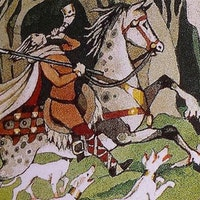
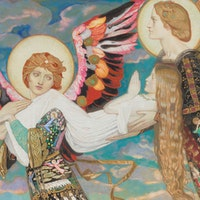
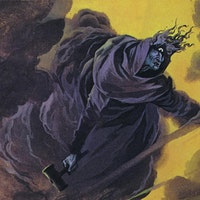
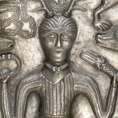
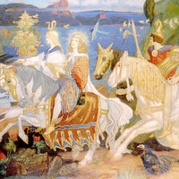
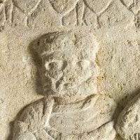
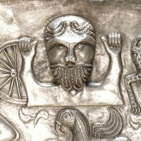

A kelta mitológia különböző ősi kelta kultúrák, például az írek, a walesiek és a gallok történeteinek és folklórjának gyűjteménye. E mítoszok közül sokat elnyomtak a római hódítók, első széles körben elterjedt kora középkorból származó felvételeikkel együtt.
Kelta Panteon
Arawn Ügyes bűvész, aki Annwn birodalmát, a kelta túlvilágot irányította. |
 |
Badb A „csatavarjú”, a kelta háború istennője és a Morrigan tagja. |
|
| Brigid A „Magasztosult”, a termékenység, a tűz és a szenvedély tisztelt kelta istennője. |
 |
| Cailleach A „Fátyolos”, a szelek és a tél ősi kelta istennője. |
 |
| Ceridwen Erőteljes kelta varázslónő, akinek bájitalai szépséget és bölcsességet hoztak. |
|
| Cernunnos Titokzatos kelta szarvas isten, a vadállatok és vad helyek ura. |
 |
| Dagda A „jó isten”, kelta istenség és a Tuatha dé Danann főnöke. |
 |
Danu A kelta „anyaistennő” és a Tuatha dé Danann matriarchája. |
|
| Lugh Lugh „a hosszú kar”, a királyok, az igazság és a vezetés kelta istene. |
 |
| Morrigan A háború, a halál és a jövendölés félelmetes ír istennője. |
|
Neit A háború kelta istene, Morrigan félelmetes istennő férje. |
|
| Taranis „A mennydörgő”, a mennydörgés és a viharok erős, hatalmas kelta istene. |
 |